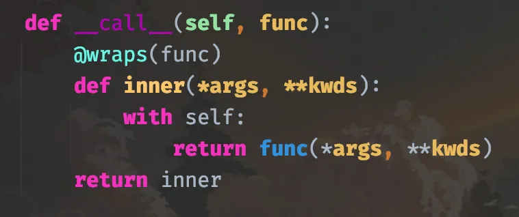
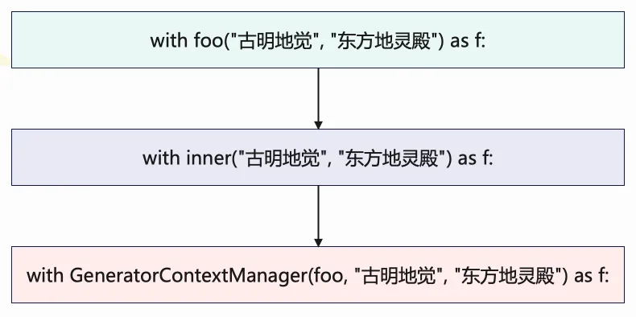

楔子
本篇文章来聊一下 Python 的 with 语句，它用于实现上下文管理器。我们使用 with 语句最多的场景，应该就是操作文件了，比如打开一个文件的时候会通过类似于 with open() as f: 这种形式打开，而这么做好处就是当 with 语句结束后会自动关闭文件。
那么 with 语句的原理是什么呢？我们怎么样才能使用 with 语句呢？这次就全方位地剖析一下。并且 Python 的标准库里面有一个模块叫做 contextlib，从名字上也能看出来这是一个用于上下文管理的模块。我们后面也会通过分析 contextlib 的源码，来手动实现一下 contextlib 的功能。
上下文管理器 API
上下文管理器（context manager）负责管理一个代码块的资源，会在进入代码块时创建资源，在退出代码块时清理资源。比如文件就支持上下文管理器 API，可以确保文件读写后自动关闭。
我们来模拟一下文件的读取：
class Open:
def __init__(self, filename, mode='r', encoding=None):
self.filename = filename
self.mode = mode
self.encoding = encoding
def __enter__(self):
print("开始执行 __enter__")
return self
def read(self):
print(f"以 `{self.mode}` 模式打开文件 `{self.filename}`")
def __exit__(self, exc_type, exc_val, exc_tb):
print("最后执行 __exit__，用于清理资源")
with Open("1.txt") as f:
f.read()
"""
开始执行 __enter__
以 `r` 模式打开文件 `1.txt`
最后执行 __exit__，用于清理资源
"""
with Open() as f: 的整个流程就是先实例化一个 Open 对象，然后通过实例对象来调用 __enter__ 方法，将其返回值赋给 with 语句中的 f，接着执行 with 语句块内的代码，最后执行 __exit__ 方法。
因此需要注意：with Open() as f 里面的 f，不一定是 Open 的实例对象，它到底是什么，取决于 __enter__ 方法返回了什么。
class Open:
def __enter__(self):
return "古明地觉"
def __exit__(self, exc_type, exc_val, exc_tb):
pass
# 如果是 f = Open(), 那么毫无疑问 f 就是类 Open 的实例对象
# 但是对于 with Open() as f 而言，则不一样
# 我们说这个 f 到底是什么, 它取决于 __enter__ 中返回了什么
with Open() as f:
print(f)
"""
古明地觉
"""
我们看到 print(f) 打印的是一个字符串，这是因为 __enter__ 返回的就是一个字符串。首先 with Open() as f: 这一行代码所做的事情就是先实例化一个 Open 对象，虽然这个实例对象我们无法用变量进行接收，但它确实存在。然后该实例对象再调用 __enter__，将 __enter__ 的返回值赋给 f，所以在 with 代码块中打印 f 得到的是一个字符串。
因此要记住：f 是由 __enter__ 的返回值决定的，只不过大多数情况下，__enter__ 里面返回的都是 self 本身，所以 f 指向的也是该类的实例对象。
当然，我们先实例化一个对象，再使用 with 也是可以的。
class Open:
def __enter__(self):
return "古明地觉"
def __exit__(self, exc_type, exc_val, exc_tb):
pass
o = Open()
# 会将 o.__enter__() 赋值给 f
with o as f:
print(f"{f}, 世界第一可爱")
"""
古明地觉, 世界第一可爱
"""
# with Open() as f: 相当于将实例化和调用 __enter__ 放在一起执行
# 但也可以先实例化，然后对实例对象单独使用 with 语句
# 比如 with o as f:, 那么会执行 o.__enter__(), 将其返回值赋值给 f
# 当 with 语句结束，再通过实例对象 o 来调用 __exit__，进行资源的释放等操作
# 当然 with 也可以不搭配 as，即独立存在
with o:
pass
因此 with 语句的流程我们就很清晰了，以 with A() as a: 为例，总共分为三步：
- 创建 A 的实例对象，然后调用 __enter__ 方法，将其返回值交给 a；
- 执行 with 语句块的代码；
- 最后由该实例对象再调用 __exit__ 进行一些收尾工作；
因此一个对象能否使用 with 语句，取决于实例化该对象的类（或者继承的基类）是否同时实现了 __enter__ 和 __exit__ 两个魔法函数，两者缺一不可。
__enter__ 我们清楚了，然后再来看看 __exit__。我们看到它的参数除了 self 之外，还有三个参数，分别是 exc_type, exc_val, exc_tb。显然这三个参数分别是异常类型、异常值、异常的回溯栈， 从名字上也能看出来。
class Open:
def __enter__(self):
return "古明地觉"
def __exit__(self, exc_type, exc_val, exc_tb):
print("__exit__执行:")
print(exc_type)
print(exc_val)
print(exc_tb)
return True
with Open() as f:
print(f)
"""
古明地觉
__exit__执行:
None
None
None
"""
# 我们看到 exc_type, exc_val, exc_tb 三者全部为 None
# 因为它们是和异常有关的，而当前没有出现异常，所以为 None
# 但如果出现异常了呢？
with Open() as f:
print(f)
1 / 0
print(123)
print(456)
print(789)
print("你猜我会被执行吗？")
"""
古明地觉
__exit__执行:
<class 'ZeroDivisionError'>
division by zero
<traceback object at 0x0000024CD4E4C080>
你猜我会被执行吗？
"""
我们看到在没有出现异常的时候，exc_type, exc_val, exc_tb 打印的值全部是 None。然而一旦 with 语句里面出现了异常，那么会立即执行 __exit__，并将异常的类型，异常的值，异常的回溯栈传入到 __exit__ 中。
因此：当 with 语句正常结束之后会调用 __exit__，如果 with 语句里面出现了异常则会立即调用 __exit__。
但是 __exit__ 方法返回了个 True 是什么意思呢？当 with 语句里面出现了异常，理论上是会报错的，但由于要执行 __exit__ 方法，所以相当于暂时把异常塞进了嘴里。如果 __exit__ 方法最后返回了一个布尔类型为 True 的值，那么会把塞进嘴里的异常吞下去，程序不报错正常执行。如果返回布尔类型为 False 的值，则会在执行完 __exit__ 方法之后再把异常吐出来，引发程序崩溃。
这里我们返回了 True，因此程序正常执行，最后一句话被打印了出来。但是 1 / 0 这行代码后面的几个 print 却没有打印，为什么呢？
因为我们说上下文管理执行是有顺序的：
- 先实例化 Open 的实例对象，调用 __enter__ 方法，将返回值交给 f；
- 执行 with 语句块的代码；
- 最后调用 __exit__；
只要 __exit__ 方法执行结束，那么这个 with 语句就算结束了。而 with 语句里面如果有异常，那么会立即进入 __exit__，因此异常下面的代码是无论如何都不会被执行的。
但当 __exit__ 返回 True 时，整个 with 语句块下面的代码是不受影响的。
另外，如果是 __enter__ 和 __exit__ 里面出现了异常，那么 with 语句肯定是会报错的。
目前我们就把 with 语句说完了，下面进行 contextlib 的分析。contextlib 是一个专门用于上下文管理的内置模块，我们来分析一下它内部是怎么实现的。
上下文管理器作为函数修饰符
contextlib 有一个类 ContextDecorator，增加了对常规上下文管理器类的支持，使得上下文管理器，也可以作为函数的装饰器，我们来看一下。
import contextlib
class Context(contextlib.ContextDecorator):
def __init__(self, how):
self.how = how
def __enter__(self):
print(f"__enter__, {self.how}")
return self
def __exit__(self, exc_type, exc_val, exc_tb):
print(f"__exit__, {self.how}")
return True
@Context("我要去装饰了")
def foo(name):
print("执行函数 foo")
return f"我的名字叫: {name}"
ret = foo("古明地觉")
"""
__enter__, 我要去装饰了
执行函数 foo
__exit__, 我要去装饰了
"""
print(ret)
"""
我的名字叫: 古明地觉
"""
我们看到上下文管理器还可以作为函数的装饰器，先执行了__enter__，然后执行 foo 函数内部的代码，最后执行 __exit__，而打印返回值也没有问题。
那么内部是如何实现的呢？首先我们装饰 foo 的时候，是使用 Context 的实例对象去装饰的，相当于给这个实例对象加上了括号，并把 foo 函数作为参数传进去了。既然实例对象加上了括号（调用），这就意味着该实例对象对应的类一定实现了 __call__，但我们定义的类没有，所以继承的父类肯定有。
我们看一下父类的 __call__ 函数的逻辑：

当 Context 实例对象在对 foo 装饰的时候，会执行这里（父类）的 __call__，函数 foo 会被传给参数 func，然后返回 inner。所以 foo 在被装饰完之后就变成了这里的 inner，只不过由于有 @wraps(func) 这个装饰器在，所以装饰之后的函数名、__doc__ 等元信息没有改变。
那么当调用 foo("古明地觉") 的时候，就等价于调用这里的 inner("古明地觉")，而里面 with self: 中的 self，显然就是 Context 的实例对象。所以就很清晰了，with self 会先执行 Context 实例的 __enter__，然后执行 func、也就是原本的 foo，最后执行 __exit__。
当然也可以把父类中 __call__ 的实现放在自己定义的类中，这样直接用就可以了，就不用再继承 contextlib 里面的父类了。
整体的逻辑就是上面分析的那样，可以仔细理一遍这里的流程。但是有一点需要注意，就是返回值问题，虽然 __exit__ 是最后执行的，但返回的仍是函数 foo 的返回值。
@Context("我要去装饰了")
def foo(name):
print("执行函数 foo")
1 / 0
return f"我的名字叫: {name}"
ret = foo("古明地觉")
"""
__enter__, 我要去装饰了
执行函数 foo
__exit__, 我要去装饰了
"""
print(ret)
"""
None
"""
我们看到返回值是 None，因为执行 foo 时出现了异常，导致立刻执行了 __exit__。既然函数返回之前出现异常了，那么就相当于返回了 None，而不是 __exit__ 里面的 True。
从生成器到上下文管理器
采用传统方式创建上下文管理器并不难，只需要创建一个包含 __enter__ 和 __exit__ 的类即可。不过某些时候，如果只有很少的上下文需要管理，那么定义一个类便会有些麻烦。在这些情况下，可以使用 contextmanager 修饰符将一个生成器函数转换为上下文管理器。
import contextlib
@contextlib.contextmanager
def foo(name, where):
print(f"我的名字是: {name}, 居住在: {where}")
yield "baka⑨"
print(f"{where}是一个很美的地方")
with foo("古明地觉", "地灵殿") as f:
print(f.upper())
"""
我的名字是: 古明地觉, 居住在: 地灵殿
BAKA⑨
地灵殿是一个很美的地方
"""
只要给函数加上这个装饰器，那么调用函数的时候便可以使用 with 语句。函数里面的 yield 相当于将函数分隔为两个战场：通过 with 调用函数时，yield 和它上面的代码相当于 __enter__ 会先执行，然后将 yield 后面的值交给 f，接着执行 with 语句块；最后执行 yield 下面的代码块，相当于 __exit__。
注意：如果使用 contextmanager 装饰的话，函数中只能出现、且必须出现一个 yield。
下面来手动实现 contextmanager 函数，contextlib 中实现的比较复杂，主要是最后对异常进行了很多的检测。我们可以适当简化，把主要的逻辑实现一下。
from functools import wraps
def contextmanager(func):
class GeneratorContextManager:
def __init__(self, func, *args, **kwargs):
self.gen = func(*args, **kwargs)
def __enter__(self):
try:
assert hasattr(self.gen, "__next__")
return next(self.gen)
except AssertionError:
raise RuntimeError("函数中必须出现、且只能出现一个yield")
def __exit__(self, exc_type, exc_val, exc_tb):
try:
next(self.gen)
except StopIteration:
return False
else:
raise RuntimeError("函数中必须出现、且只能出现一个yield")
@wraps(func)
def inner(*args, **kwargs):
return GeneratorContextManager(func, *args, **kwargs)
return inner
@contextmanager
def foo(name, where):
print(f"我的名字是: {name}, 居住在: {where}")
yield "baka⑨"
print(f"{where}是一个很美的地方")
with foo("古明地觉", "地灵殿") as f:
print(f.upper())
"""
我的名字是: 古明地觉, 居住在: 地灵殿
BAKA⑨
地灵殿是一个很美的地方
"""
结果没有问题，以上我们就手动实现了一个 contextmanager，下面还是分析一下整体的流程。
当使用 contextmanager 装饰的时候，foo 函数就变成了内层函数 inner。然后通过 with 语句调用的时候：

最终会创建一个 GeneratorContextManager 对象，而 self.gen 显然是基于生成器函数 foo 创建的生成器。因为是在 with 语句里面，实例对象创建完之后要执行 __enter__。然后在里面通过 next(self.gen) 驱动生成器执行，此时 foo 里面 yield 上半部分的代码就开始执行了。当执行到 yield 时，生成器暂停，然后 __enter__ 会将 yield 后面的值赋给变量 f。
接着就开始执行 with 代码块了，因为 yield 返回的是一个字符串，所以 f 也是一个字符串，我们转成大写并打印。
with 语句块结束之后，跳转到 __exit__，在里面通过 next(self.gen) 继续驱动生成器执行。此时 foo 里面 yield 下半部分的代码开始执行，当出现 StopIteration 时代表执行完毕。如果没有出现 StopIteration，那么说明 yield 的下面还有 yield，此时程序会报错。
以上就是整个流程，本质上还是转成了类的上下文管理。
最后，由于 contextlib 中的 contextmanager 返回的上下文管理器继承自 ContextDecorator，所以它也可被用作函数修饰符。
import contextlib
@contextlib.contextmanager
def foo(name, where):
print(f"我的名字是: {name}, 居住在: {where}")
yield "baka⑨"
print(f"{where}是一个很美的地方")
@foo("古明地觉", "地灵殿")
def bar():
print("猜猜我会在什么地方输出")
bar()
"""
我的名字是: 古明地觉, 居住在: 地灵殿
猜猜我会在什么地方输出
地灵殿是一个很美的地方
"""
当执行 bar 的时候，还是会先执行 foo 里面 yield 的上半部分，然后执行 bar 函数，最后执行 foo 里面 yield 的下半部分。并且此时 yield 后面的内容是什么也已经无关紧要了，因为根本用不到了。
当然我们也可以手动实现上面的功能，建议当做练习自己尝试一下，并不难。
关闭打开的句柄
诸如文件之类的 io 流，都会有一个 close 操作。因此为了确保关闭，可以使用 contextlib 中的一个叫做 closing 的类。
import contextlib
class Open:
def __init__(self):
self.status = "open"
def main(self):
return "执行了很复杂的逻辑"
def close(self):
self.status = "closed"
with contextlib.closing(Open()) as f:
print(f.main()) # 执行了很复杂的逻辑
print(f"状态: {f.status}") # 状态: open
# with 语句结束后
print(f"状态: {f.status}") # 状态: closed
contextlib.closing 接收一个类的实例对象，其实主要就帮我们做了两件事：一个是可以通过 with 语句的方式来执行，另一个是执行完毕之后自动帮我们调用 close 方法。这里我们不手动实现了，非常简单，感觉没啥卵用，直接看源码中是如何实现的吧。
class closing(AbstractContextManager):
def __init__(self, thing):
# 这里的 thing 显然是我们之前传入的 Open 的实例对象 f
self.thing = thing
def __enter__(self):
# 先调用 __enter__ 返回之前的实例
return self.thing
def __exit__(self, *exc_info):
# 最后调用我们实例的 close 方法
self.thing.close()
因此当使用 closing 的时候，我们的类必须定义 close。
忽略异常
很多情况下，忽略产生的异常很有用，如果这个异常无法百分百避免、并且该异常又没啥卵用，那么就可以忽略掉。而要忽略异常，最常用的办法就是利用一个 try except 语句。
但在我们当前的主题中，try except 也可以被替换成 contextlib.suppress()，以更显示地抑制 with 块中产生的异常。
import contextlib
def foo():
print(123)
1 / 0
print(456)
with contextlib.suppress(ZeroDivisionError, TypeError):
foo()
print(789)
"""
123
"""
在 foo 中出现了除零错误，但是程序并没有报错，相当于异常被镇压了。注意：如果 with 块中出现的异常，无法匹配 suppress 接收的异常，那么异常还是会抛出来的。但是对于当前的例子来说，除零错误显然是被成功捕获了，最终只输出了 123。并且不仅 1/0 下面的 456 没有打印，连 foo() 下面的 789 也没有打印。
因为只要出现了异常，就会进入到 __exit__ 中，我们看一下源码是如何实现的。
class suppress(AbstractContextManager):
def __init__(self, *exceptions):
self._exceptions = exceptions
def __enter__(self):
pass
def __exit__(self, exctype, excinst, exctb):
return exctype is not None and issubclass(exctype, self._exceptions)
非常简单，没有发生异常就不说了。如果发生异常，但只要能和给定的异常相匹配的话，程序也不会报错。
异步上下文管理器的实现
Python 在 3.5 的时候引入了 async 和 await，可以通过 async def 定义一个原生的协程函数，通过 await 驱动一个协程执行。
而异步上下文则可以通过 async with 来实现。
import asyncio
class A:
def __init__(self, name):
self.name = name
async def __aenter__(self):
print("__aenter__")
return self
async def __aexit__(self, exc_type, exc_val, exc_tb):
print("__aexit__")
return True
# 必须定义一个协程函数，然后通过事件循环驱动协程执行
async def main():
async with A("古明地觉") as f:
print(f.name)
asyncio.run(main())
"""
__aenter__
古明地觉
__aexit__
"""
异步上下文管理需要定义 __aenter__ 和 __aexit__。
import contextlib
import asyncio
@contextlib.asynccontextmanager
async def foo():
print(123)
yield 456
print(789)
async def main():
async with foo() as f:
print(f == 456)
asyncio.run(main())
"""
123
True
789
"""
关于异步上下文管理，其实和普通的同步上下文管理是类似的，其它相关内容有兴趣可以自己实现一下。
小结
以上就是 with 语句的用法，非常基础的内容了，当然我们还介绍了一个模块 contextlib，在工作中也可以多多使用它。